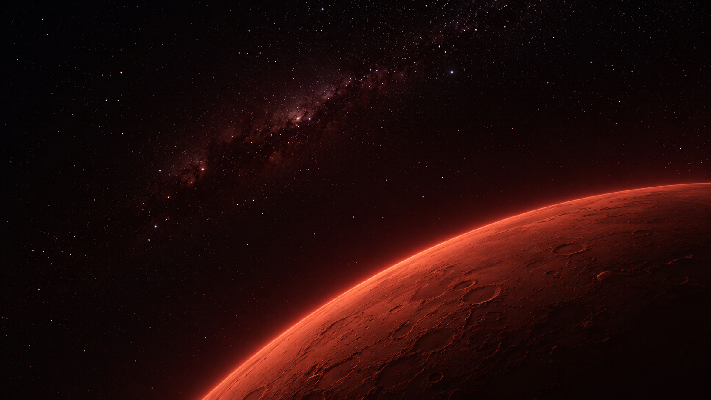
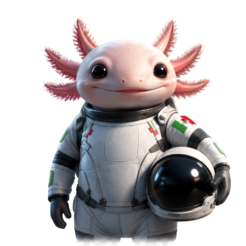
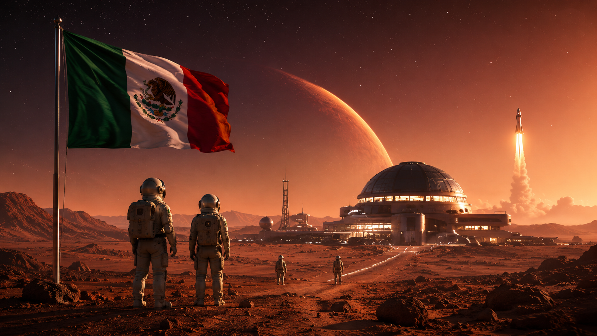
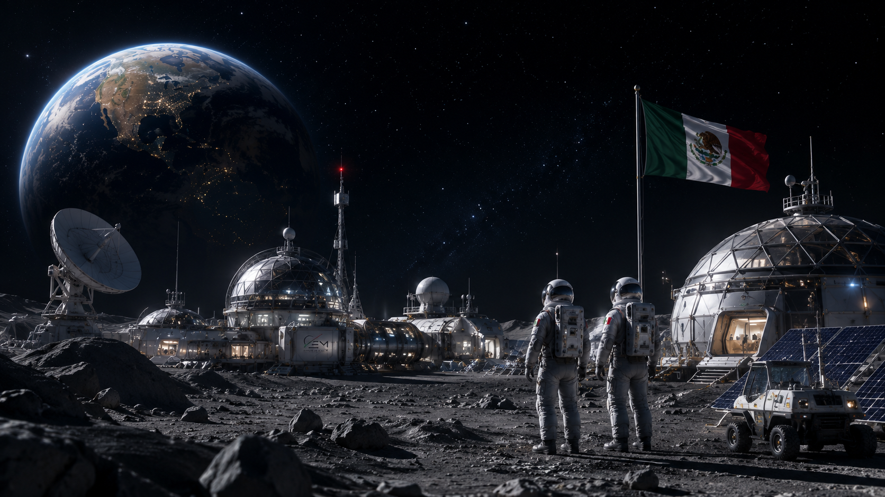

Misión
Desarrollar conocimiento, tecnología y talento humano.
Impulsar la exploración pacífica del espacio, la innovación científica, el crecimiento económico y el bienestar de la sociedad mexicana.
 Explorar
Explorar
● CEM · 19.43° N — 99.13° O · MÉXICO
Una plataforma nacional para la investigación espacial, la innovación aeroespacial y la formación del talento científico que llevará a México más allá del horizonte.
01 / Descripción
El Centro Espacial Mexicano es una institución dedicada al desarrollo científico, tecnológico y educativo relacionado con la exploración espacial, la investigación astronómica, la innovación aeroespacial y la formación de nuevas generaciones de científicos, ingenieros y emprendedores espaciales.
Su propósito es convertir a México en una potencia latinoamericana en ciencia y tecnología espacial durante el siglo XXI.
Misión
Impulsar la exploración pacífica del espacio, la innovación científica, el crecimiento económico y el bienestar de la sociedad mexicana.

Visión
Ser el principal centro de investigación, innovación y educación espacial de América Latina, reconocido por sus contribuciones a la exploración del universo.
02 / Valores
Buscar constantemente nuevas soluciones y tecnologías.
Mantener los más altos estándares científicos y académicos.
Actuar con ética, transparencia y responsabilidad.
Trabajar en equipo con instituciones nacionales e internacionales.
Promover el uso responsable de los recursos y el cuidado del planeta.
Motivar a las nuevas generaciones a alcanzar grandes metas.
Poner la ciencia y la tecnología al servicio del pueblo mexicano.

03 / Propósito
El Centro Espacial Mexicano existe para convertir la curiosidad humana en descubrimientos que beneficien a México y a toda la humanidad.
«Nuestro destino no termina en la Tierra; apenas comienza entre las estrellas.»
04 / Meta 2050

Primer astronauta mexicano formado íntegramente por el CEM.
Constelación nacional de satélites.
Base científica mexicana en colaboración internacional para exploración lunar.
Liderazgo aeroespacial de América Latina.
Un millón de jóvenes mexicanos capacitados en ciencia y tecnología espacial.

C · E · M